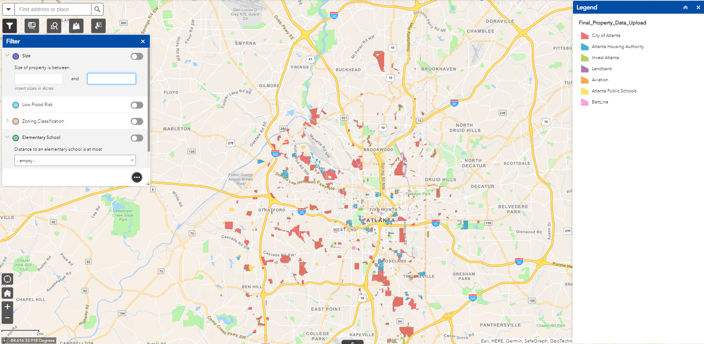
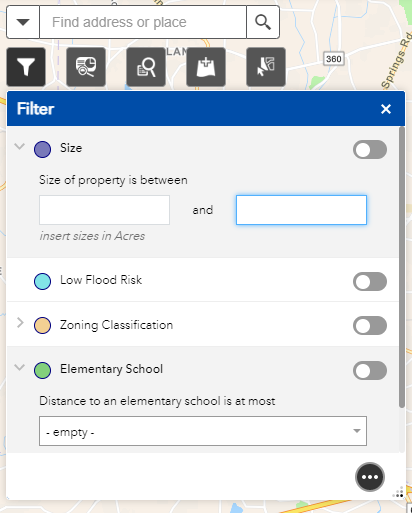
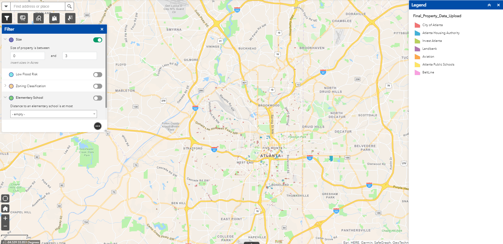
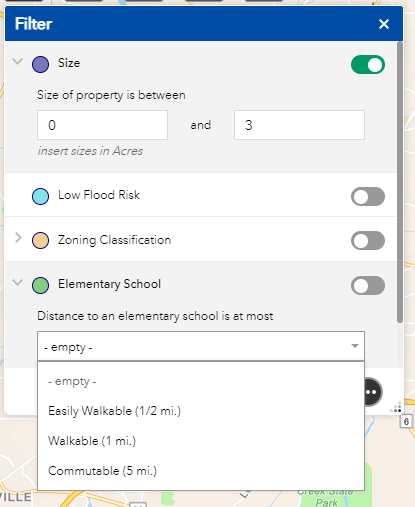
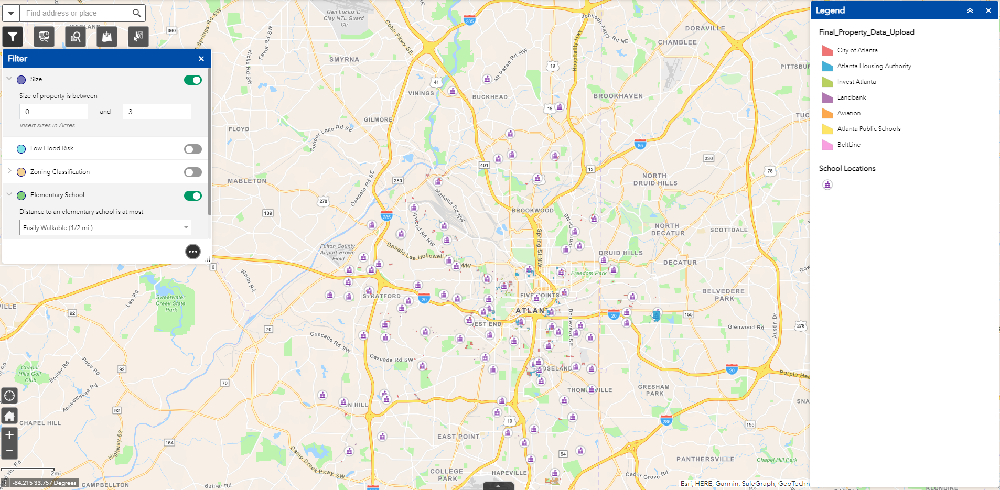
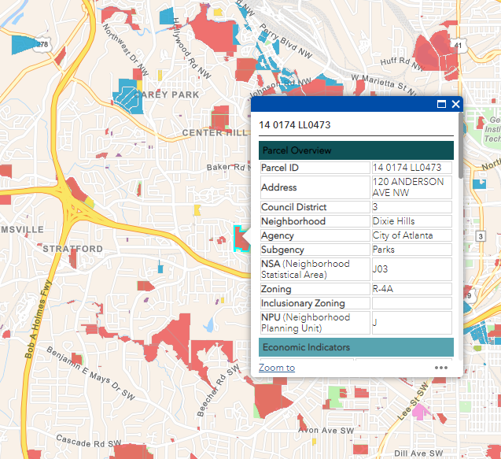
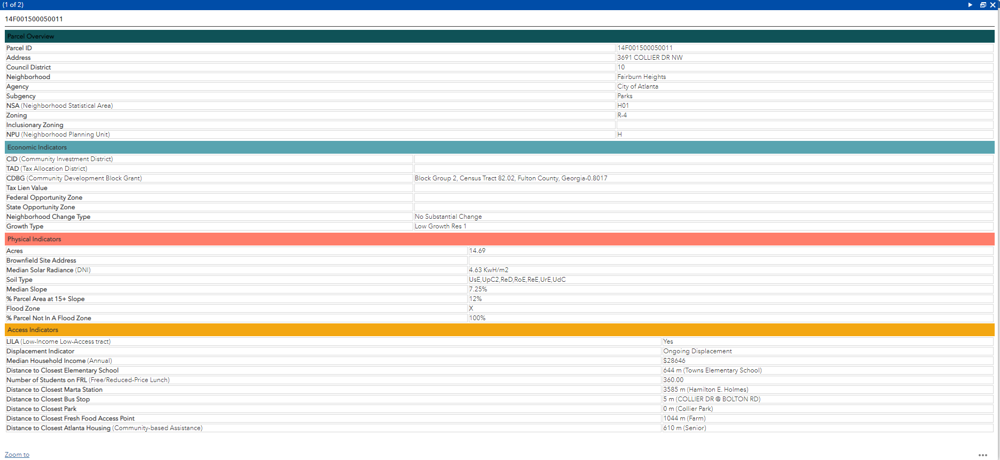

Welcome to my page! I've spent some time documenting my work, my interests, and random things about myself here. I hope you find what your looking for. Please do look around!
Atlanta Publicly Owned Property Web App
TLDR: Created a toolset for the City of Atlanta City Planning Department to use that prioritized what publicly owned properties to develop various typologies of establishments(housing, commercial, etc.) upon

Topics
Multi-Criteria Decision Analysis(MCDA), Property Development, Data, ArcGIS Pro, ArcGIS Online, ArcGIS Web App, Excel, Project Definition, City Planning, User Design
Project Motivation
The intention of this toolset is to help all parties interested in stewarding public-owned properties well. The toolset enables users to have more informed decisions of what public properties would be best preserved, developed, or renovated for the good of Atlanta. These tools were developed to gather data and analyze the publicly-owned land inside the City of Atlanta. As the toolset was originally intended for the use of the Office of Housing and Community Development, the tool tends to display data and enable analysis that is oriented toward said office’s work. However, with the interest of transparency and enabling public residents, this toolset has been redirected for public use as well.

filter tool pane
Built Features
- property development score
- attribute filtering
- spatial filtering
- upload custom layer data
- property search & exploration
- export properties after transformations
Project Walkthrough
I built this tool up starting from an excel sheet of parcels. My supervisor was awesome in giving me guidance and feedback through this project though! I used ArcGIS Pro to perform attribute and spatial joins to create the base layers for this map. My knowledge of property development assisted me in selecting relevant variables to analysis the properties through. I then had to find the data for these variables. This part took a long time, I had to go snooping around the organization, partner orgs, and the internet for additional data sources that were not immediately avaliable to me. I used internal data sources for the city parks, federal online sources for the raster slope topoology, and reached out to Atlanta Housing Authority for various tax data.
The meat of my work then came when deciding the methodology to determine which properties were fit for certain development types. I researched MCDA and debated using multiple methods like AHP and TOPSIS. However, I decided to go with the simplest which is closest to a weighted summation because City of Atlanta(CoA) staff was not able to support that level of ongoing detailed analysis at that time. All of the data source variables were fed into ArcGIS Pro and Python was used to automate the algorithm in ArcGIS to score and rank each parcel based upon its suitability for certain types of development(multi-use residential, park, affordable housing, etc.).
While I had generated these results, there was no easy way to explore and view them. From there, I created an outward facing ArcGIS Webapp which includes the funcationalities mentioned above and more! An example of the filtering capability is shown to the left where a user can specify the size of property they want to look at. You can see the result before and after below amongst other example funcationalities of the tool!
Before Size Filter
After Size Filter (Display Properties Lower than 3 acres)

School Dist. Filter Pane

After School Dist. Filter

Property Exploration

Details avaliable for more details

I wanted to thank you... for your leadership and dedication to this project... You really shaped this project and implemented a vision for it... I really trusted your work. You elevated this project beyond what would have been possible had we not had you on board.
— City of Atlanta Department of City Planning Supervisor

You did a great job... from coming up to speed quickly on how to best work with our team to completing all tasks efficiently and with a high quality of work. For every task given, especially larger ones, you were good at taking ownership of the project with minimal direction needed.
— East West Manufacturing Supervisor

I am very pleased with your performance, team spirit, self-starter mentality, and leadership. I am very pleased... with your ability to move a project from concept to reality... you have helped get us... strong infrastructure, technical capability, programming
— Center for Sustainable Communities Supervisor